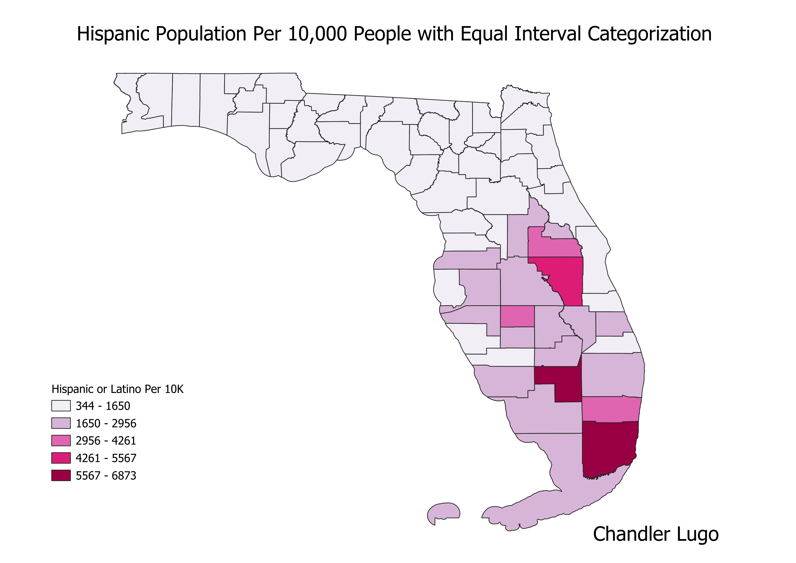

Homework 6 Pt. 2: Census Data Ratios and Categories
Chandler Lugo
Ratio
For these maps, I used the ratio of Hispanic or Latino People in Florida
Counties to the total population of the counties. I looked at this ratio on a scale of 10,000 people.
Natural Breaks Categorization
Equal Interval Categorization

Equal Count Categorization

Link to my Github
Link to all data on Github